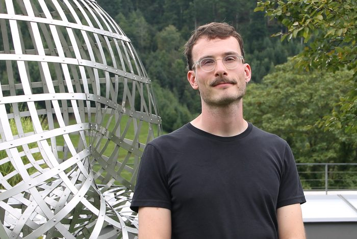

Jonas Köppl
Postdoctoral researcher in mathematics at the Cluster of Excellence Mathematics Münster: Dynamics – Geometry – Structure. Previously, I was a PhD student at the Weierstraß Institute (WIAS) in the research group Probabilistic Methods for Dynamic Communication Networks under the supervision of Benedikt Jahnel, and a Phase II student at the Berlin Mathematical School.
Universität Münster
Institut für mathematische StochastikEinsteinstraße 62, 48149 Münster, Germany
jonas.koeppl@uni-muenster.de

Research interests
Interacting particle systems, random dynamics, Gibbs measures, percolation.
Selected publications
- On the stationary measures of the critical Ornstein–Uhlenbeck processarXiv:2609.07622pdf
- Asymptotically complete free-energy dissipation: a coarse MLSI holds at any positive temperaturearXiv:2608.13677pdf
- On the absence of time-translation symmetry breaking in some non-reversible interacting particle systemsarXiv:2602.22104pdf
- The planar lattice two-neighbor graph percolatesarXiv:2412.20781pdfsimulations
- On the long-time behaviour of reversible interacting particle systems in one and two dimensionsdoi:10.2140/pmp.2025.6.479arXiv
- Dynamical Gibbs variational principles for irreversible interacting particle systems with applications to attractor propertiesdoi:10.1214/22-AAP1926arXivpdf
All publications
Preprints 12
- 22Uniqueness and full coverage in k-neighbor graphsarXiv:2611.06800pdf
- 21Space-time large deviations for continuum birth-and-death processesarXiv:2610.28307pdf
- 20Comparison inequalities for discrete- and continuous-time infection processesarXiv:2609.09892pdf
- 19On the stationary measures of the critical Ornstein–Uhlenbeck processarXiv:2609.07622pdf
- 18Asymptotically complete free-energy dissipation: a coarse MLSI holds at any positive temperaturearXiv:2608.13677pdf
- 17Convex order and faster transmission in first contact percolationarXiv:2605.28766pdf
- 16Restriction and mixing properties of interacting particle systems with unbounded rangearXiv:2603.21817pdf
- 15On the absence of time-translation symmetry breaking in some non-reversible interacting particle systemsarXiv:2602.22104pdf
- 14Reversible birth-and-death dynamics in continuum: a de Bruijn-type identity for free-energy dissipationarXiv:2602.13474pdf
- 13Local criteria for global connectivity comparisons: beyond stochastic dominationarXiv:2510.03934pdf
- 12Reversible birth-and-death dynamics in continuum: free energy dissipation and attractor propertiesarXiv:2508.21196pdf
- 11Evolutionary games on the lattice: multitype contact process with density-dependent birth ratesarXiv:2412.19957pdf
Accepted 1
- 10The planar lattice two-neighbor graph percolatesarXiv:2412.20781pdfsimulations
Published 9
- 9A correlation bound for the one-dimensional heterogeneous Ising modeldoi:10.1214/26-ECP793pdf
- 8The variational principle for a marked Gibbs point process with infinite-range multibody interactionsdoi:10.1214/25-EJP1441pdf
- 7Time-periodic behaviour in one- and two-dimensional interacting particle systemsdoi:10.1007/s00023-025-01624-5arXivvideo
- 6Percolation in lattice k-neighbor graphsdoi:10.1017/jpr.2025.15pdf
- 5Survival and extinction for a contact process with a density-dependent birth ratedoi:10.1214/25-EJP1335pdf
- 4On the long-time behaviour of reversible interacting particle systems in one and two dimensionsdoi:10.2140/pmp.2025.6.479arXiv
- 3Dynamical Gibbs variational principles for irreversible interacting particle systems with applications to attractor propertiesdoi:10.1214/22-AAP1926arXivpdf
- 2Trajectorial dissipation of Φ-entropies for interacting particle systemsdoi:10.1007/s10955-023-03136-0arXivpdf
- 1Feedback loops in opinion dynamics of agent-based models with multiplicative noisedoi:10.3390/e24101352arXivpdf
Proceedings, Reports, etc. 1
- R1Condensation with optimal rate and excitation spectrum for Bose gases in the Gross–Pitaevskii limitdoi:10.14760/OWR-2025-46pdf
“Live” projects
- Counterexamples in interacting particle systems · community project on GitHub
- Percolation in discrete k-nearest-neighbour graphs · community project on GitHub
Simulations
Live simulations, running in your browser, of the dynamics of interacting particle systems (the driven clock and XY models of Maes and Shlosman and Lipowski's prey–predator lattice, with their rotating and oscillating states) and of percolation models (directed k-neighbour graphs on ℤ², the triangular lattice and the Poisson–Delaunay triangulation). Open the simulations
Talks
Upcoming talks
- Colloquium in Probability, München · 16:30 · Continuous symmetry breaking in discrete interacting particle systems?
- Oberseminar Wahrscheinlichkeitstheorie, Universität Augsburg · 14:00 · room 2004 (L1)
Past talks 24
- Paderborn probability seminar, Universität Paderborn
- Statistical Mechanics and Combinatorics of Discrete Planar Structures, Erwin Schrödinger Institute, Vienna
- Oberseminar Stochastik, TU Darmstadt
- Statistical Mechanics of Lattice Systems, Brin MRC, Maryland
- Groupe de travail “Processus ponctuels et applications”, Université de Lille
- Oberseminar für angewandte Analysis, Universität Ulm
- 44th Conference on Stochastic Processes and their Applications, Wrocław
- LA Probability Forum, Caltech, Los Angeles
- UCLA Probability Seminar, Los Angeles
- Interacting particles in the continuum, Eurandom, Eindhoven
- 4th Italian Meeting on Probability and Mathematical Statistics, Rome
- Paderborn probability seminar, Universität Paderborn
- Postgraduate Online Probability Seminar (POPS), online
- UCLA Probability Seminar, online
- What is…? Seminar, Berlin Mathematical School, Berlin · video
- Mathematics of Random Systems Summer School 2023, Kyoto
- German Probability and Statistics Days 2023, Essen
- BMS Student Conference 2023, TU Berlin
- Analysis and Probability seminar, Universität Passau
- Dies Mathematicus 2022, TU Berlin · best talk award
- Interacting Random Systems seminar, WIAS Berlin
- DMV Annual Meeting, Berlin
- BMS–BGSMath Junior Meeting, Barcelona
- DMV Student Conference, MPI MiS Leipzig · best talk award
Other activities
Since May 2024, I am a co-organiser of the Postgraduate Online Probability Seminar (POPS), a monthly online seminar which provides a platform for doctoral students and postdocs from all over the world to present and promote their research in areas related to probability and its applications. If you are interested in presenting your work or want to suggest a speaker, feel free to reach out by email!